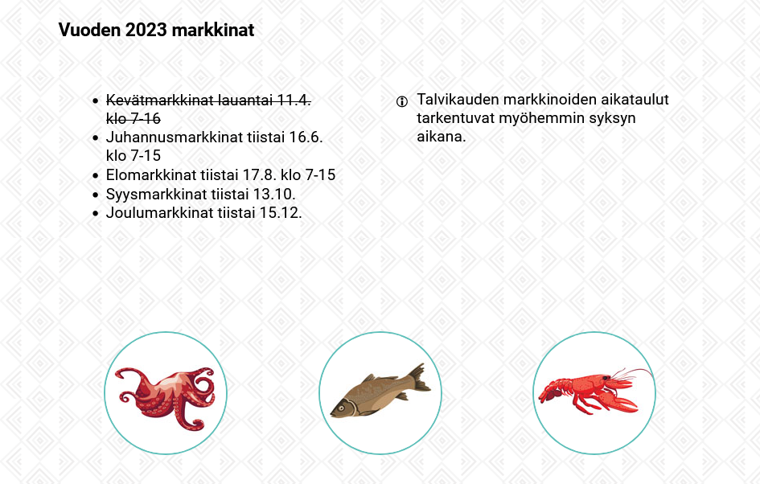
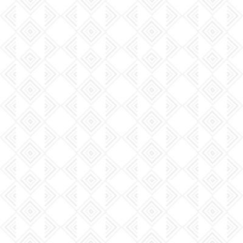

Demo 5 - Kalatori: markkinat
- Kalatori-sivuston seuraavana osana toteutetaan ”markkinat”-osio
- Lisää kalatori-sivuston kansioon markkinat.html ja markkinat.css
- Linkitä markkinat.css ja common.css
html_css_basics
|
├── demos
| |
│ └── d5_kalatori
| |
│ ├── markkinat.html
│ ├── markkinat.css
│ ├── header.html
│ ├── header.css
│ ├── common.css
| |
│ └─── img
│ │ ├── kuva_1.jpg
│ │ └── kuva_2.jpg
|

Markkinat
- Toteuta mallin mukainen osio
- Lisää ostikko h2 'Vuoden 2023 markkinat'
- Lisää 2 saraketta, joista toisessa on lista ja toisessa infoteksti
- Kokeile yliviivausta
- Lisää 3 kuvaa ja asemoi ne vierekkäin
- Käytä alla olevia piirroskuvia tai hae uudet netistä
- Tee kuvista pyöreitä CSS:llä ja lisää ääriviiva
- Aseta bodylle (common.css) pattern tyylinen toistuva taustakuva
- Kokeile lisätä info-erikoismerkki CSS:before propertyllä
Vuoden 2023 markkinat
Kevätmarkkinat lauantai 11.4. klo 7-16
Juhannusmarkkinat tiistai 16.6. klo 7-15
Elomarkkinat tiistai 17.8. klo 7-15
Syysmarkkinat tiistai 13.10.
Joulumarkkinat tiistai 15.12.
Talvikauden markkinoiden aikataulut tarkentuvat myöhemmin syksyn aikana.


